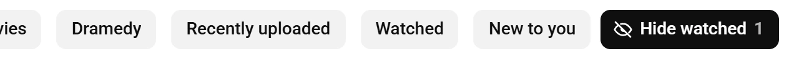

Guide 05·Watched
How to hide videos you've already watched on YouTube.
Updated 14 November 2026
Short answer
YouTube has no setting to hide videos you've already watched on Home or Subscriptions. Search has an Unwatched chip, but Home's Watched chip does the opposite and shows only what you've seen. Needle adds a Hide watched chip to Home and Subscriptions: one click and every video you've finished goes, with a count of how many, and a second click brings them back.
01·On YouTube
What YouTube's own chips do
The row of chips at the top of Home has one called Watched, and it isn't a filter for hiding things. It shows only videos you've already seen, for when you want to find one again. Next to it, New to you leans toward channels you don't usually watch, which isn't the same as leaving out what you've finished.
Subscriptions has no chips at all, so every upload from every channel you follow stays in the list, watched or not.
The one place YouTube does it is search. Signed in, the results have an Unwatched chip that leaves out videos you've already watched. Beyond that, Not interested in a video's ⋮ menu takes it off Home, one video at a time.
Pausing your watch history doesn't help either. Since 2023, YouTube can switch Home off entirely when history is off and there isn't enough of it to go on, which clears out more than you meant to.
02·With Needle
Hide them with Needle
- Open YouTube's Home, or your Subscriptions, signed in.
- Press Hide watched: at the end of the row of chips on Home, and beside All subscriptions on Subscriptions.
- Every video you've finished goes, and the number on the chip says how many.
- Press it again and they're all back.

It stays on until you press it again, on both pages, and on Home it sits outside the part of the row that scrolls, so it's always in reach.
03·What counts
What counts as watched
Finished, not opened. Needle reads the red bar YouTube draws along the bottom of each thumbnail, which is how far you got, and treats 90% or more as done. Where YouTube hasn't drawn a bar, it checks your history instead.
Half-watched videos stay on purpose: something you're in the middle of is the opposite of done with. If 90% is the wrong line for you, change Finished at in Needle's settings (All settings, in the popup), anywhere from 50 to 100.
Rather keep them in view but out of the way? Set Finished videos in Needle's settings to Dim them, and they fade instead of going.
04·In search
In search
YouTube's Unwatched chip works for most searches. With Needle you can also type it: add unwatched to a search in YouTube's own search bar and the results keep only what you've never started, and it combines with the other filters.
python tutorial unwatched | Tutorials you haven't started |
unwatched <20m | Under 20 minutes, never started |
is:fresh | Nothing you were shown before, watched or not |
More of these in the search filters guide.
05·On a channel
On a channel's page
Open Needle's panel on a channel (the needle button in the bottom right corner, or Alt+Y) and set Watched to what you haven't started, or turn on Hide finished videos in Needle's settings to leave out what you've finished every time. Searching a channel with Needle covers the rest.
06·Watch Later
Watch Later is different
Watched videos in Watch Later don't need hiding, they need removing, and YouTube has a button for that. How to remove watched videos from Watch Later, and how to choose exactly which ones go.
07·Limits
What it can't see
- Progress YouTube has forgotten. If your history auto-deletes, or was paused when you watched something, YouTube has no bar and no record for it, so Needle doesn't either.
- Other pages. Hide watched works on Home and Subscriptions. In search use the Unwatched chip or
unwatched, and on a channel use the panel. - The app. Needle is for YouTube in a desktop browser. On a phone, Not interested is the only way to take a video off Home.
08·Questions
Questions?
Can YouTube hide videos I've already watched?
Not on Home or Subscriptions. Search results have an Unwatched chip for signed-in accounts, and Not interested takes out one video at a time, but there's no switch for the feed.
Does it hide videos I only watched halfway?
No. Hide watched takes out what you finished, 90% or more by default. Something you're halfway through stays, so you can pick it up. Change the line with Finished at in Needle's settings.
Can I dim them instead of hiding them?
Yes. In Needle's settings, set Finished videos to Dim them. They stay in place, faded, and come back to full on hover, and the chip then reads Dim watched.
Does it work in the YouTube app, or signed out?
No. Needle runs in a desktop browser, and it goes by your watch progress, which YouTube only has while you're signed in. Signed out, the chip doesn't appear.
Is my watch history sent anywhere?
No. Needle has no server. It reads progress from YouTube's own page and your history on youtube.com, keeps it on your device, and never sends it anywhere.